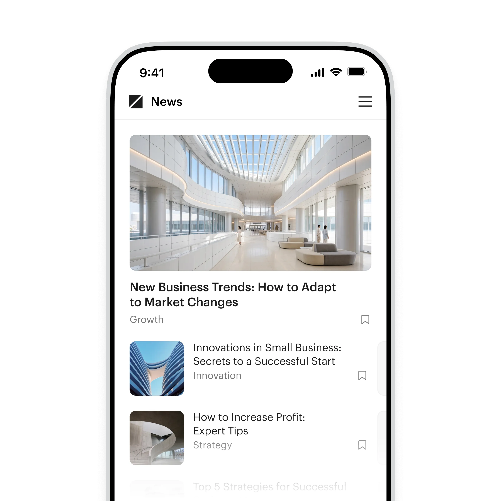
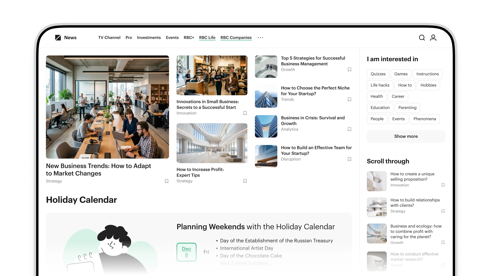
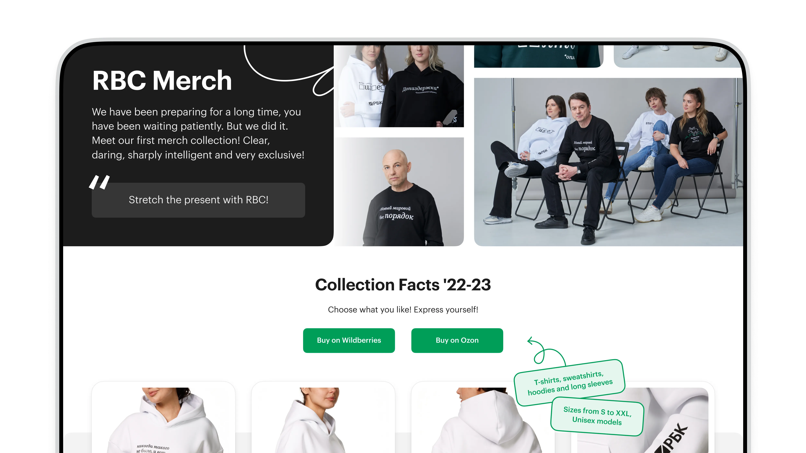
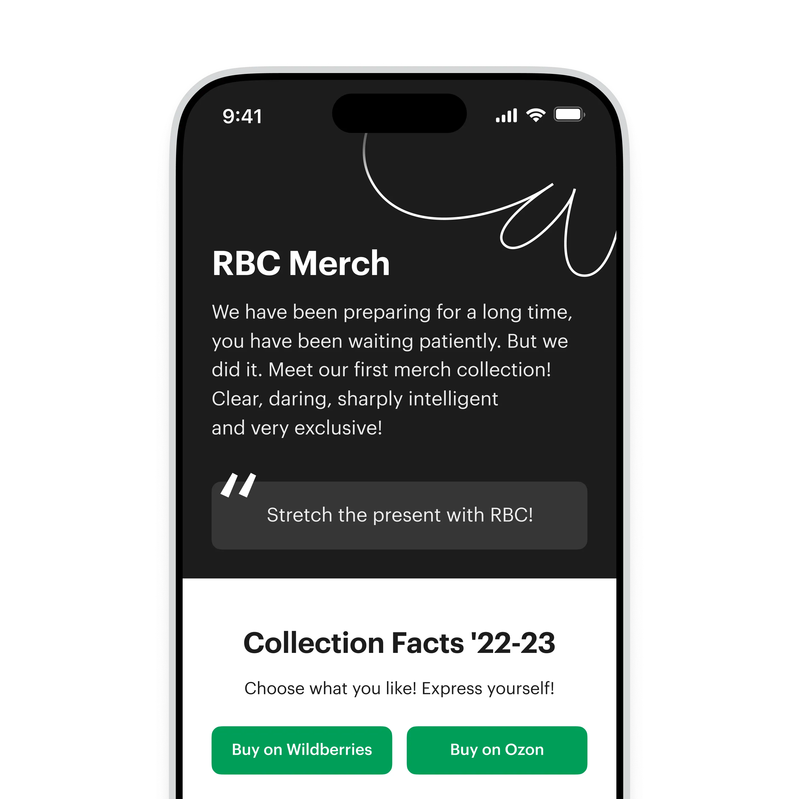
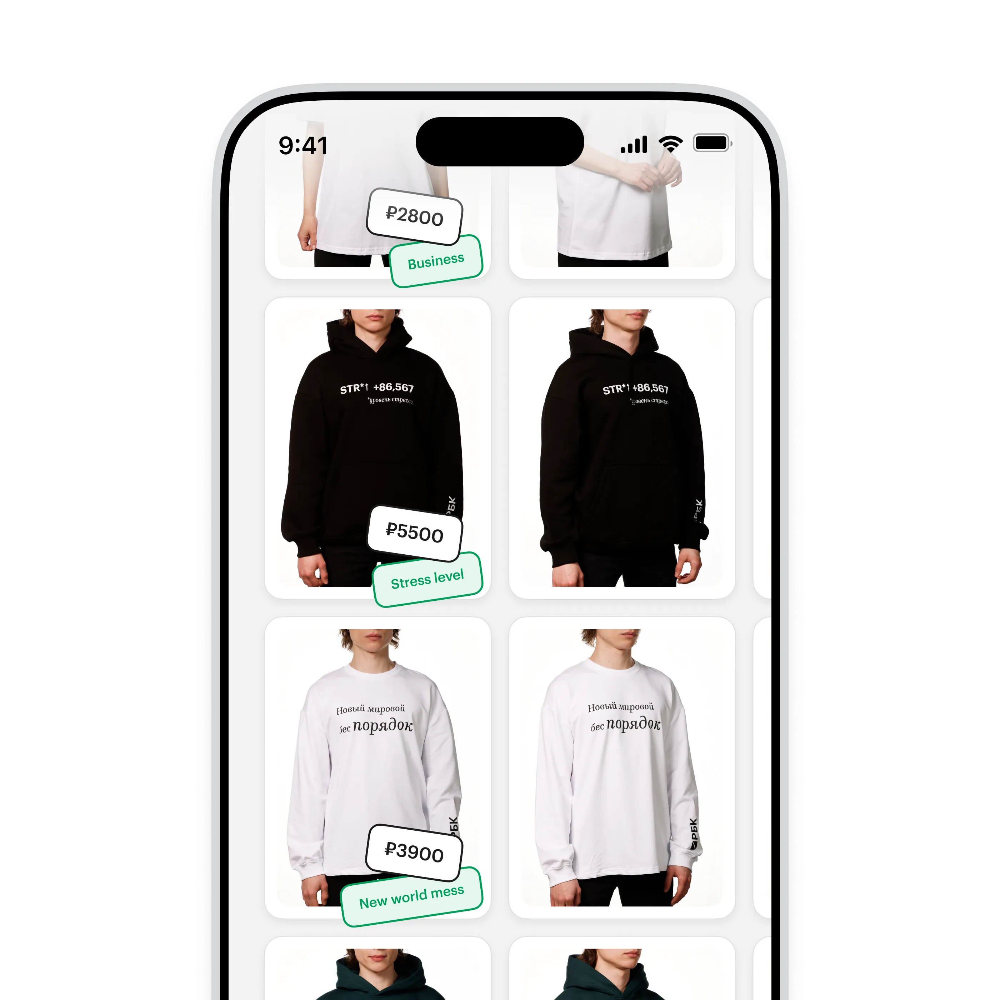
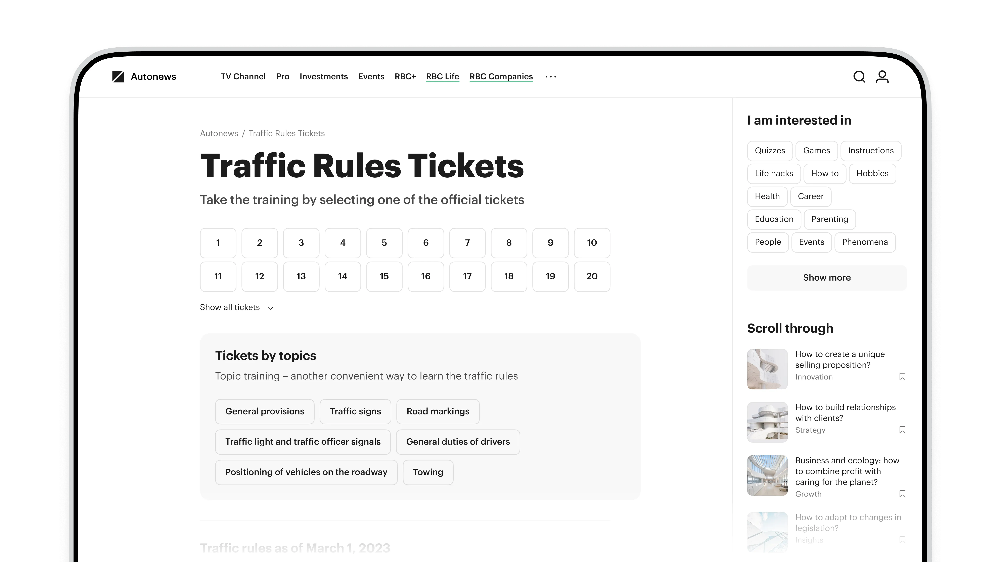
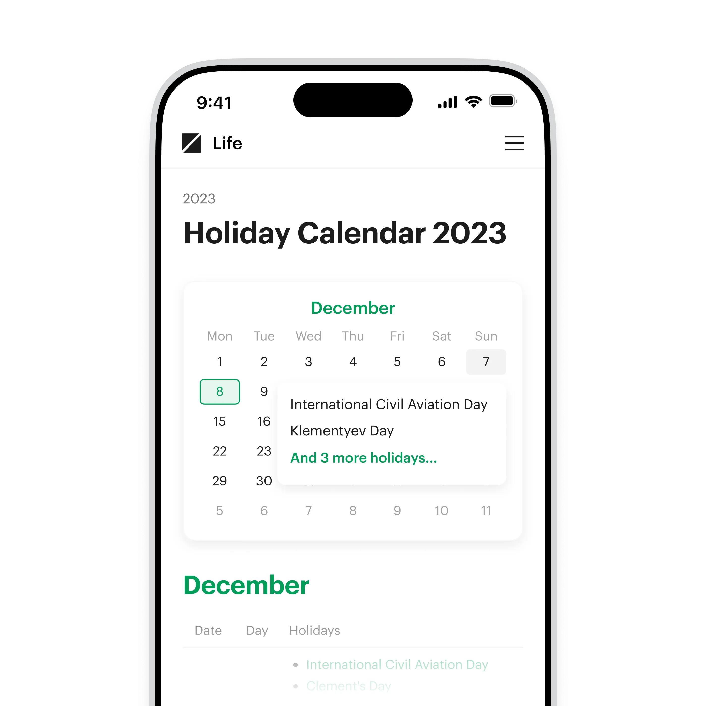
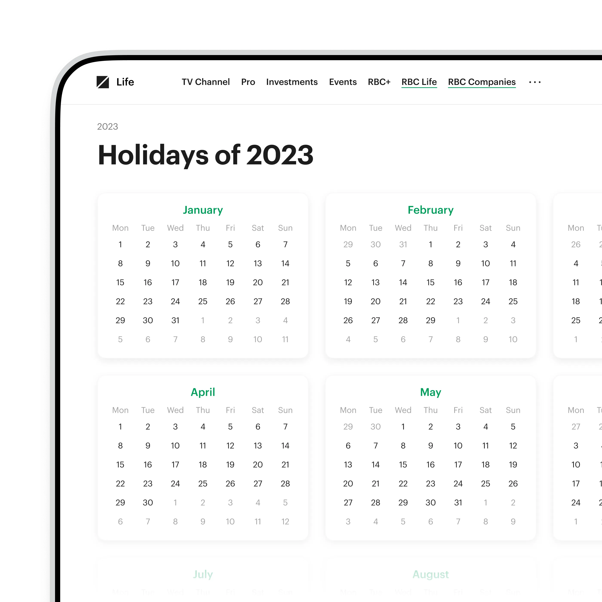

Платформа «Новости»
A product covering top political, economic, and business news, analyst commentary, and market data for RBC. I launched and improved new features — the Life holiday calendar, RBC personas, and Autonews services — and designed components for content tables, infographics, and ad formats. Together with the team, I migrated the product to a new development stack and design tokens

The news feed
RBC News is the heart of the product — the key stories people read every day. I rebuilt the article cards, the meta, and the grids for both desktop and mobile so the flow reads easily on any screen — after the rework, feed read-depth grew by about a quarter

An events calendar in the feed
Interactive mechanics moved into the feed itself — like a calendar of holidays and events. It lives right in the news stream and gives a reason to come back: you see what's ahead without leaving the homepage
One feed on desktop
On a wide screen the feed opens into a full showcase: lead stories, interest-based collections, and a built-in calendar block. Restructuring the grids and meta let us show more content without it feeling crowded

The RBC merch landing
RBC's first merch was a standalone promo launch. I helped shape the design of the collection itself and built the landing that sells it: a showcase, facts about each item, and direct links to the marketplaces. The first drop sold out in about three weeks

Promo on mobile
The mobile version keeps the same character — bold, tongue-in-cheek, sharp. The big offer, the collection facts, and a clear path to buy all fit on one screen

The collection showcase
Every item comes with a price, sizes, and its own character — from hoodies to sweatshirts. The product cards link straight to Wildberries and Ozon, and the landing itself went to a competition and took a prize there

Traffic-rule tickets in Autonews
For Autonews I built a full traffic-rules ticket mechanic: users work through the official tickets, practice by topic, and see which rules have changed. Tests show your level and break down mistakes — like a dedicated app, but right inside the media. In the first month the mechanic was completed over 50 thousand times

The Life holiday calendar
Every public holiday and notable date on a single page. You see in advance when the official days off fall and when it's just an occasion — from major holidays to little-known dates, neatly tagged by type. We gathered over 300 holidays into one calendar

The whole year at a glance
On desktop the calendar opens into a year grid: the whole year at once, month by month. Within RBC Life it's part of the core news product — and one more reason to come back regularly
